Dark social là gì? Hiểu đúng nguồn và direct traffic
Dark social là gì? Đó là hoạt động chia sẻ nội dung qua kênh riêng tư như tin nhắn, nhóm đồng nghiệp hoặc email cá nhân khiến công cụ phân tích khó nhận diện nguồn, khác với direct là nhãn mà công cụ đo gán cho lượt truy cập thiếu thông tin nguồn rõ ràng. Tôi là Lê Tuấn Việt, Marketing Leader tại TAKI Group, đã cố vấn hệ thống đo lường và báo cáo cho hơn 200 doanh nghiệp SME. Bài viết này giải thích cơ chế Referer khiến trình duyệt làm mất dấu nguồn, ba nhóm nguyên nhân direct theo tài liệu Google và quy trình bốn bước để thu hẹp phần chưa biết.
- Đăng ngày
- Cập nhật

Tóm tắt nhanh
- Dark social mô tả chia sẻ link qua kênh riêng tư khiến công cụ đo khó nhận diện nguồn; direct là nhãn phân loại khi không đủ thông tin. Hai khái niệm chỉ giao nhau ở một phần, không trùng nhau.
- Trình duyệt áp dụng chính sách strict-origin-when-cross-origin mặc định từ Chrome 85, chỉ gửi tên miền gốc khi chuyển sang tên miền khác và không gửi gì khi từ HTTPS sang HTTP.
- Tài liệu Google nêu ba nhóm nguyên nhân direct: thiếu tham số, truy cập trực tiếp hoặc ngoại tuyến, và trình chặn quảng cáo. Chỉ một nhóm có thể liên quan tới chia sẻ riêng tư.
- Quy trình bốn bước: làm sạch nguồn đã biết, tách direct theo loại trang đích, hỏi khách một câu tự nguyện, và trình bày kèm phương pháp.
Mục lục bài viết12 phần
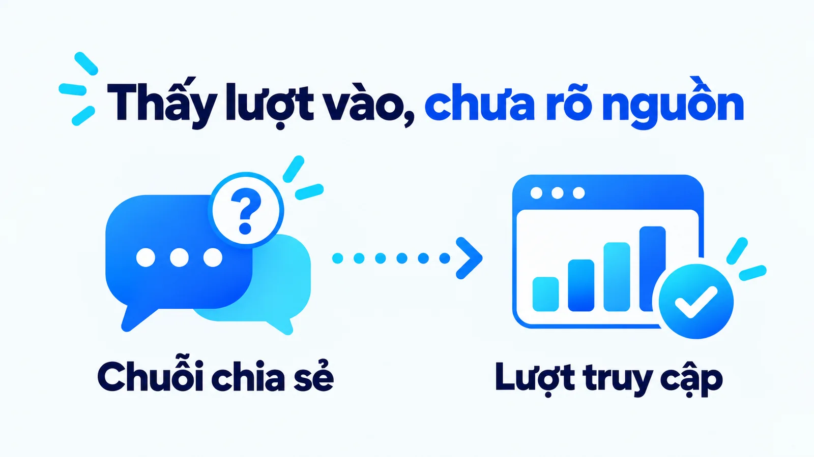
Dark social là gì trong marketing?
Thuật ngữ này có một nguồn gốc cụ thể. Alexis Madrigal đặt tên dark social trong một bài trên The Atlantic năm 2012, sau khi phân tích lưu lượng của chính tòa soạn và phát hiện gần 57% lưu lượng xã hội đến từ những nguồn mà công cụ đo không xác định được. Cùng thời điểm, Chartbeat quét một tập hợp các trang tin và đưa ra con số 69% cho phần lưu lượng xã hội không rõ nguồn.
Cách đọc hai con số năm 2012
Hai con số này giải thích vì sao khái niệm được chú ý, nhưng phải đọc kèm ba giới hạn. Chúng là số liệu năm 2012, khi hệ sinh thái ứng dụng nhắn tin, chính sách trình duyệt và công cụ đo còn rất khác hiện nay. Chúng được đo trên các trang tin, nơi hành vi chia sẻ bài báo khác hẳn hành vi chia sẻ một trang dịch vụ. Và chúng dùng để hiểu hiện tượng, không dùng làm tỷ lệ chuẩn áp cho doanh nghiệp của bạn.
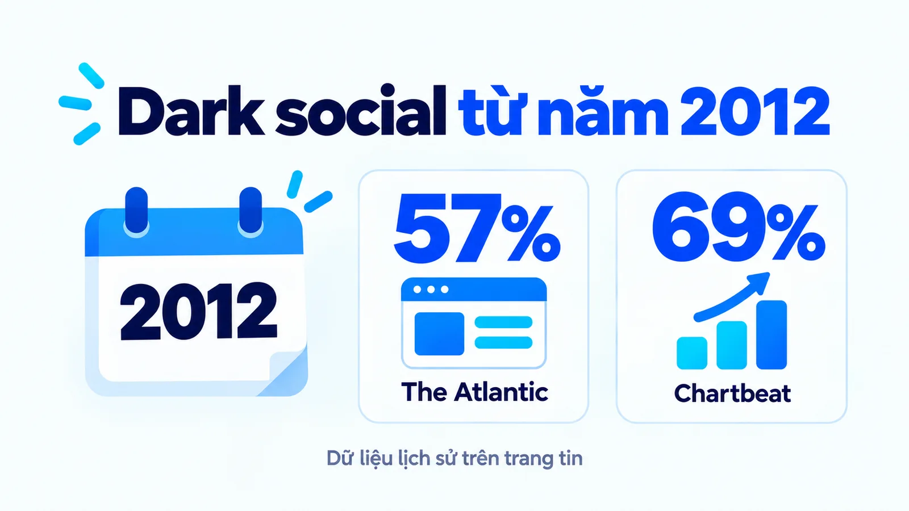
Đặc điểm của dark social
Đặc điểm của dark social nằm ở khoảng trống đo lường, không phải một loại nội dung bí mật hoặc một mạng xã hội mới. Một người đọc bài so sánh giải pháp rồi gửi link cho đồng nghiệp là ví dụ dễ hình dung. Người nhận có thể xem bài, tìm thêm thông tin và liên hệ thương hiệu. Báo cáo website chỉ quan sát được phần hành trình xuất hiện trong hệ thống của doanh nghiệp.
Trong cách dùng rộng, một số người còn đưa lời giới thiệu qua điện thoại, podcast hoặc cuộc gặp vào nhóm tương tác khó quy nguồn. Bài này tập trung vào chia sẻ link riêng tư để giữ cơ chế rõ. Nhắc tên thương hiệu trong một cuộc nói chuyện và chuyển một URL có thể tạo hai dấu vết khác nhau.
Vì sao trình duyệt làm mất dấu vết nguồn?
Vì trình duyệt được thiết kế để không tiết lộ đầy đủ người dùng vừa đến từ đâu. Đây là cơ chế mặc định, không phải một lỗi cài đặt trên website của bạn.
Tiêu đề Referer hoạt động thế nào
Khi người dùng nhấn một link, trình duyệt có thể gửi kèm một tiêu đề tên là Referer, cho trang đích biết trang trước đó. Công cụ phân tích dựa vào tiêu đề này để xếp lượt truy cập vào đúng nguồn. Nhưng lượng thông tin trong tiêu đề đó phụ thuộc chính sách của trình duyệt, và chính sách đã siết lại.
Chrome áp dụng chính sách mặc định strict-origin-when-cross-origin từ phiên bản 85, ra bản ổn định vào tháng 8 năm 2020. Theo chính sách này, với một liên kết trong cùng một tên miền, trình duyệt gửi đầy đủ đường dẫn. Với liên kết sang tên miền khác, trình duyệt chỉ gửi tên miền gốc, không gửi đường dẫn và không gửi chuỗi truy vấn. Còn khi đi từ một trang HTTPS sang một trang HTTP, trình duyệt không gửi gì cả.
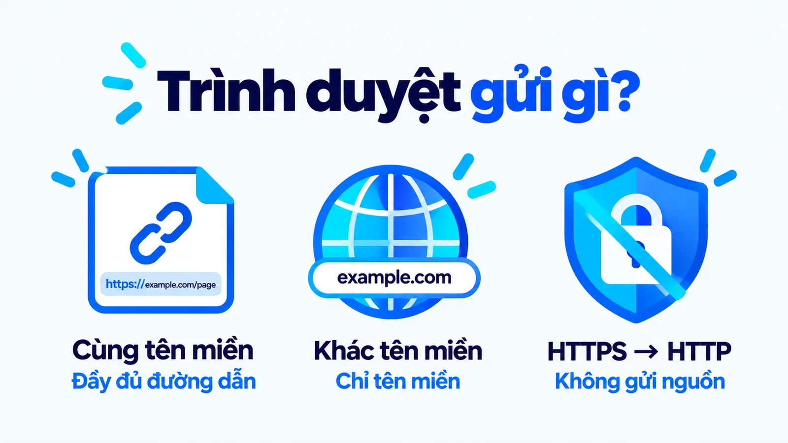
Hệ quả với chia sẻ riêng tư rất trực tiếp. Nhiều ứng dụng nhắn tin mở link trong trình duyệt tích hợp hoặc mở theo cách không truyền tiêu đề Referer. Ngay cả khi có truyền, phần thông tin đến được website cũng chỉ là tên miền gốc chứ không phải đường dẫn cụ thể của cuộc trò chuyện. Không có cấu hình nào trên website lấy lại được phần thông tin mà trình duyệt đã quyết định không gửi.
Hệ quả thứ hai: mất cả chi tiết bài đăng
Có một hệ quả thứ hai ít người để ý. Vì trình duyệt chỉ gửi tên miền gốc khi sang tên miền khác, nên ngay cả những lượt truy cập được quy nguồn đúng cũng mất phần chi tiết. Bạn biết người dùng đến từ một mạng xã hội, nhưng không biết họ đến từ bài đăng nào.
Với đội nội dung, khoảng trống này ảnh hưởng tới quyết định hằng ngày nhiều hơn cả phần dark social, vì nó khiến việc so sánh hiệu quả giữa các bài đăng trở nên khó khăn ngay cả khi nguồn đã rõ.
Vì sao trình duyệt làm như vậy
Điều đáng nói là chính sách này có lý do chính đáng. Đường dẫn đầy đủ của trang trước đó có thể chứa thông tin nhạy cảm, chẳng hạn một trang kết quả tìm kiếm nội bộ, một trang hồ sơ hoặc một chuỗi truy vấn có mã đơn hàng. Gửi trọn đường dẫn đó sang một tên miền khác là rủi ro riêng tư thật.
Nói cách khác, khoảng trống đo lường mà marketer gặp phải là cái giá của một cải thiện về quyền riêng tư, không phải một thiếu sót kỹ thuật chờ được vá.
Tuy nhiên, không nên viết rằng mọi link từ ứng dụng chat đều mất nguồn. Cách mở link, trình duyệt, nhãn gắn sẵn trong đường dẫn và thiết lập đo có thể làm kết quả khác nhau. Một đường dẫn có tham số chiến dịch vẫn có thể mang nhãn đó khi được chuyển tiếp, vì tham số nằm trong chính URL chứ không nằm trong tiêu đề Referer.
Như vậy, không thấy chuỗi chia sẻ khác với không ghi nhận được lượt truy cập. Một lần vào website có thể được ghi nhận bình thường trong khi người giới thiệu đầu tiên vẫn chưa rõ. Nếu hệ thống đo không ghi được lượt vào, đó còn là vấn đề chất lượng đo cần kiểm tra riêng.
Google nêu những nguyên nhân nào của direct/none?
Tài liệu chính thức của Google Analytics nêu ba nhóm nguyên nhân, và chỉ một nhóm có thể liên quan tới chia sẻ riêng tư.
- Thiếu thông tin nguồn: link không gắn tham số UTM, hoặc chuỗi chuyển hướng và công cụ rút gọn làm rơi mất tham số trên đường đi.
- Truy cập trực tiếp hoặc nguồn ngoại tuyến: người dùng gõ thẳng địa chỉ, hoặc mở link từ tài liệu ngoại tuyến như file PDF và Word.
- Trình chặn quảng cáo: can thiệp vào cookie dùng để nhận diện nguồn, khiến lượt truy cập bị xếp vào direct.
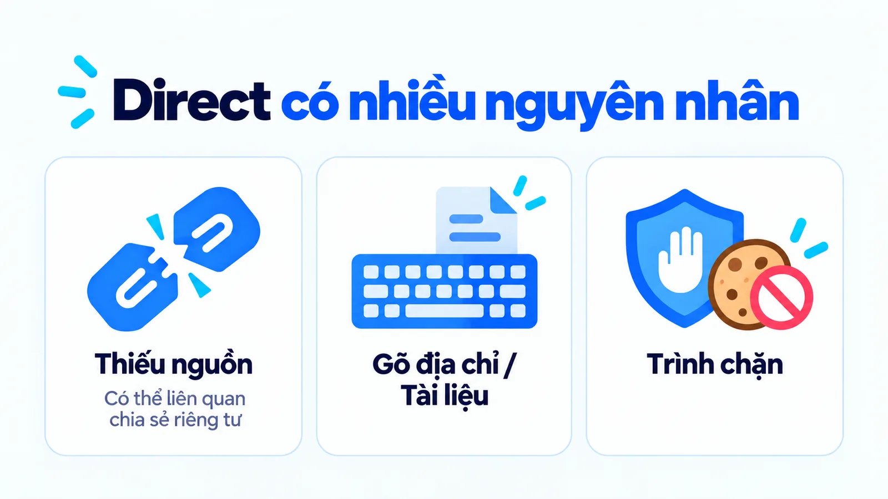
Đọc danh sách này sẽ thấy vấn đề của cách báo cáo phổ biến. Nếu một doanh nghiệp gọi toàn bộ direct là dark social, họ đang gộp cả người gõ thẳng địa chỉ, người mở link từ file PDF và người dùng trình chặn quảng cáo vào cùng một nhóm với người được đồng nghiệp gửi bài. Bốn nhóm này cần bốn hành động khác nhau.
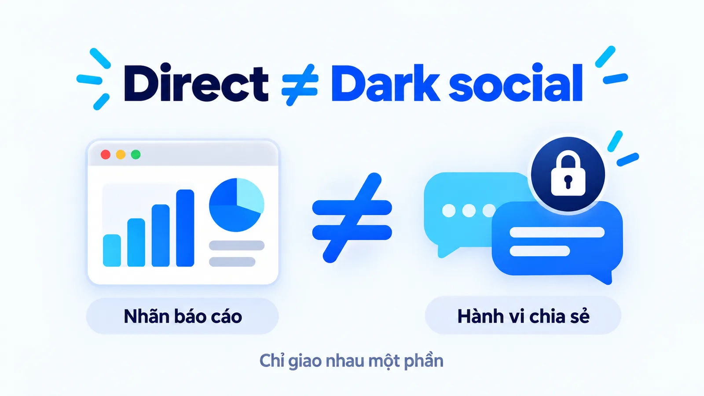
Dark social và direct traffic khác nhau ở đâu?
Direct là tên một kênh trong báo cáo. Dark social là tên một hành vi ngoài đời. Một bên do công cụ đặt khi không đủ thông tin, một bên do người dùng thực hiện khi gửi link cho nhau. Chúng giao nhau ở một phần, không trùng nhau.
Bạn có thể dùng direct vào một bài sâu, khó nhớ địa chỉ, làm tín hiệu để đặt câu hỏi. Nhưng đó vẫn là giả thuyết. Người dùng có thể mở dấu trang, tài liệu cũ hoặc một link mất nhãn vì nguyên nhân khác. Đừng đổi tên toàn bộ direct thành giới thiệu riêng tư chỉ để báo cáo có vẻ đầy đủ hơn.
| Tình huống | Điều có thể quan sát | Điều chưa thể kết luận |
|---|---|---|
| Gõ địa chỉ website | Lượt truy cập có thể là direct | Không có marketing trước đó |
| Mở link trong tin nhắn thiếu nguồn | Lượt vào thiếu nguồn rõ ràng | Chính xác ai gửi và gửi ở đâu |
| Mở link có UTM còn nguyên | Nhãn chiến dịch được truyền tới hệ thống đo | Nhãn có mô tả đúng người chuyển tiếp cuối cùng |
| Direct tăng trong một ngày | Biến động báo cáo | Toàn bộ phần tăng là dark social |
Dark social là gì với một SME?
Xét một doanh nghiệp thiết kế văn phòng thuộc nhóm SME (doanh nghiệp vừa và nhỏ) đăng bài về cách bố trí ánh sáng ở khu làm việc.
Một quản lý hành chính thấy bài hữu ích và gửi cho đồng nghiệp phụ trách cơ sở vật chất. Người nhận mở link, xem thêm trang dịch vụ rồi gửi yêu cầu tư vấn. Nếu nguồn giới thiệu thiếu thông tin, báo cáo có thể không cho đội marketing biết cuộc chuyển tiếp đầu tiên.
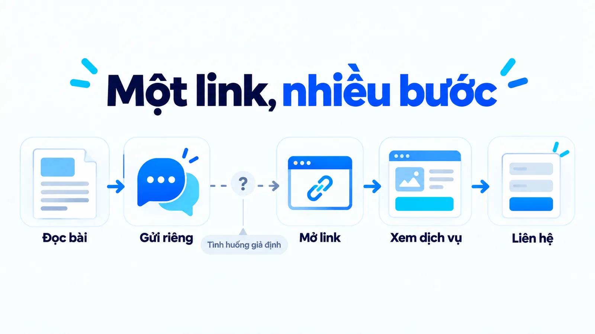
Nếu chỉ đọc dòng direct, đội có thể bỏ sót vai trò của nội dung giải thích. Ngược lại, nếu tự gán yêu cầu tư vấn cho bài hướng dẫn, đội cũng đang bỏ qua khả năng khách đã biết thương hiệu từ trước. Cả hai cách đều mạnh hơn bằng chứng đang có.
Một câu hỏi tự nguyện dạng bạn biết đến chúng tôi qua đâu có thể bổ sung bối cảnh. Khi khách trả lời đồng nghiệp gửi bài, doanh nghiệp có thêm dữ liệu khai báo. Câu trả lời giúp hiểu đường đi, nhưng không tự xác nhận đây là tác động duy nhất tạo ra yêu cầu tư vấn.
Đội marketing thật sự biết gì?
Thử đặt ba câu hỏi vào tình huống này sẽ thấy phần nào đội marketing thật sự biết.
- Biết: có một lượt truy cập vào bài hướng dẫn và một yêu cầu tư vấn, vì hệ thống ghi nhận được cả hai việc này.
- Không biết chắc: bài hướng dẫn có phải thứ khiến người đó liên hệ hay không, vì người đó có thể đã cân nhắc từ trước.
- Hoàn toàn không biết: người gửi link đầu tiên là ai, nên cũng không biết nên cảm ơn ai hoặc nên tạo thêm nội dung cho nhóm nào.
Sự khác nhau giữa ba mức này quyết định hành động. Với mức thứ nhất, đội có thể báo cáo bình thường. Với mức thứ hai, đội cần một thử nghiệm hoặc một câu hỏi để kiểm chứng. Với mức thứ ba, đội chỉ có thể hỏi trực tiếp, vì không công cụ đo nào lấy lại được thông tin đó.
Đọc tiếp Micro conversion là gì để phân biệt lượt xem bài, lượt xem dịch vụ và yêu cầu tư vấn. Mỗi bước có giá trị khác nhau; một lượt được chuyển tiếp chưa phải doanh thu.
UTM và nút chia sẻ giúp gì, không giúp gì?
Tài liệu UTM của Google cho biết tham số chiến dịch trong URL có thể gửi giá trị nguồn, phương tiện và chiến dịch tới Analytics khi người dùng mở link. Điểm mạnh của cơ chế này là tham số nằm trong chính đường dẫn, nên nó không phụ thuộc vào tiêu đề Referer mà trình duyệt có thể cắt bớt.
Nhưng tham số cũng mất trong nhiều tình huống rất thường gặp.
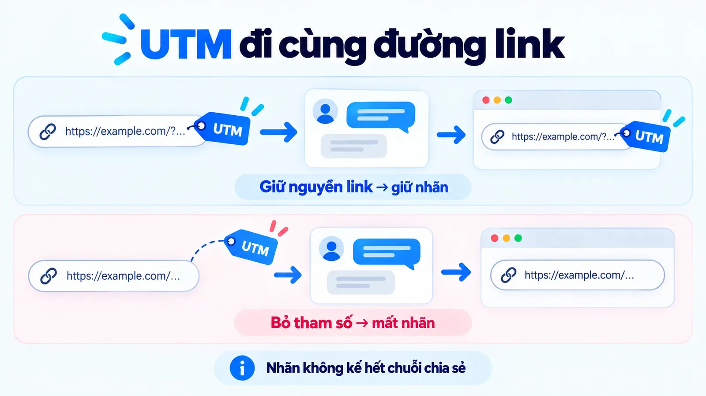
Ví dụ, doanh nghiệp phát hành một link gắn nhãn cho email giới thiệu bài hướng dẫn. Nếu người nhận chuyển nguyên link vào nhóm chat, nhãn email có thể tiếp tục đi cùng đường dẫn. Nhãn cho biết cách doanh nghiệp phát hành link ban đầu; nó không kể đầy đủ chuỗi chuyển tiếp sau đó. Trong báo cáo, lượt truy cập đó vẫn mang nhãn email dù người dùng thật sự đến từ một nhóm chat.
Nút chia sẻ và link rút gọn
Nút chia sẻ cũng tạo được tín hiệu nếu website có cách ghi nhận phù hợp. Sự kiện nhấn nút là bằng chứng người dùng bắt đầu thao tác, chưa chắc đã gửi thành công, người nhận đã mở hoặc đã mua. Cần gọi tên chỉ số theo việc thật sự đo được.
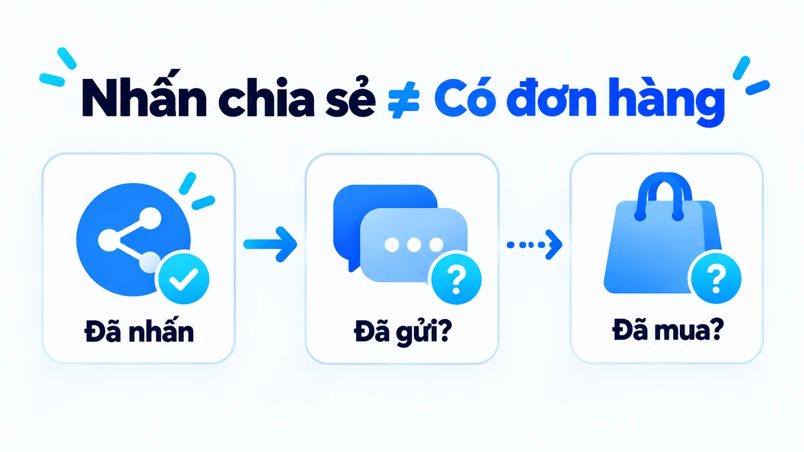
Link rút gọn có thể hỗ trợ quản lý hoặc thống kê lượt mở theo công cụ cụ thể, nhưng không mặc nhiên khôi phục toàn bộ nguồn. Đừng gắn lời hứa đo hết dark social cho một công cụ. Phần thiếu chỉ được thu hẹp khi cách phát hành, thiết lập đo và việc sử dụng thực tế cùng phù hợp.
Đo dark social bằng cách nào cho có căn cứ?
Chạy bốn bước dưới đây. Mục tiêu là thu hẹp phần chưa biết, không phải xóa nó khỏi báo cáo.
- 01Làm sạch nguồn đã biếtGắn UTM cho mọi link doanh nghiệp tự phát hành, kiểm tra nhãn còn nguyên khi tới trang đích, và rà lại các chuỗi chuyển hướng xem có làm rơi chuỗi truy vấn không.
- 02Tách direct theo loại trang đíchDirect vào trang chủ là bình thường. Direct vào URL sâu, dài, không ai gõ tay được mới là tín hiệu đáng đặt câu hỏi.
- 03Hỏi khách một câu tự nguyệnThêm trường bạn biết đến chúng tôi qua đâu ở biểu mẫu, để trống mặc định và không bắt buộc khách phải trả lời.
- 04Trình bày kèm phương phápGhi rõ đây là ước lượng, nêu giả định đã dùng và khoảng dao động, không gọi nó là con số thật.
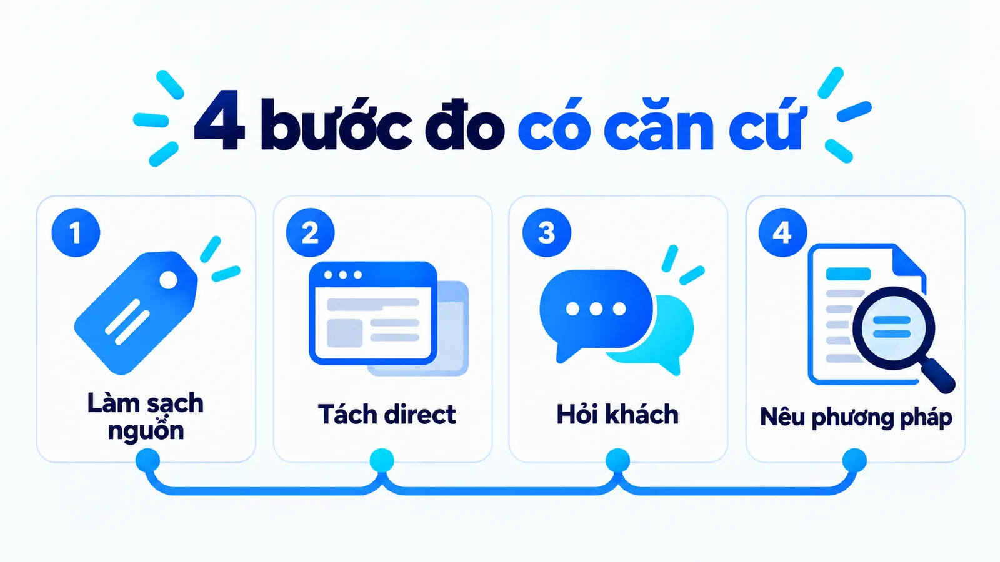
Bước một chiếm phần lớn giá trị. Phần lớn direct trong nhiều tài khoản đến từ chính lỗi gắn nhãn chứ không từ chia sẻ riêng tư.
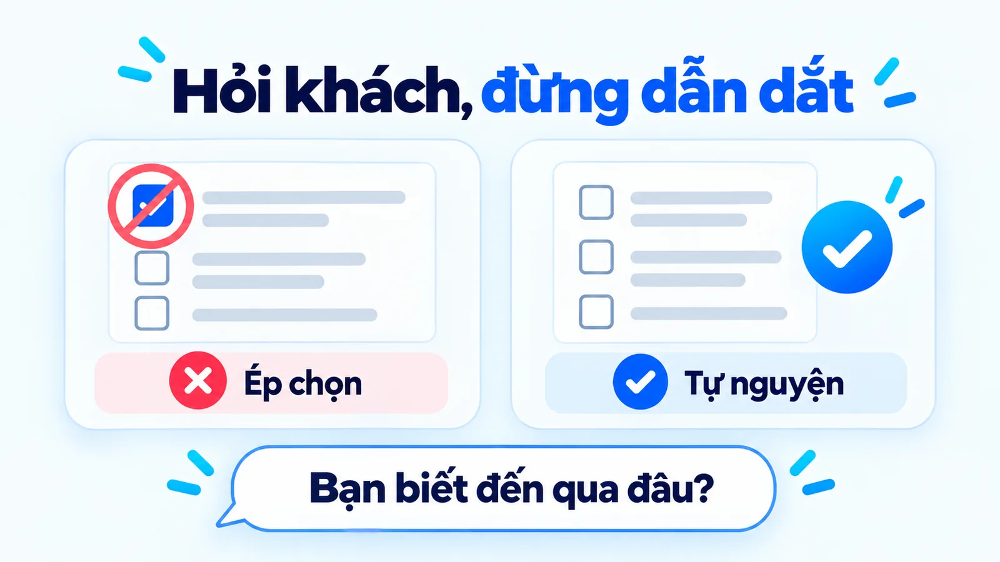
Bước ba đáng được nói kỹ, vì một trường hỏi sai còn tệ hơn không hỏi: nó tạo cảm giác đã biết câu trả lời trong khi dữ liệu thu về đã lệch ngay từ lúc thiết kế câu hỏi.
Sau bốn bước, phần direct còn lại nhỏ hơn và có ý nghĩa hơn. Đó là cải thiện thật, khác hẳn với việc đổi tên nhãn trong báo cáo.
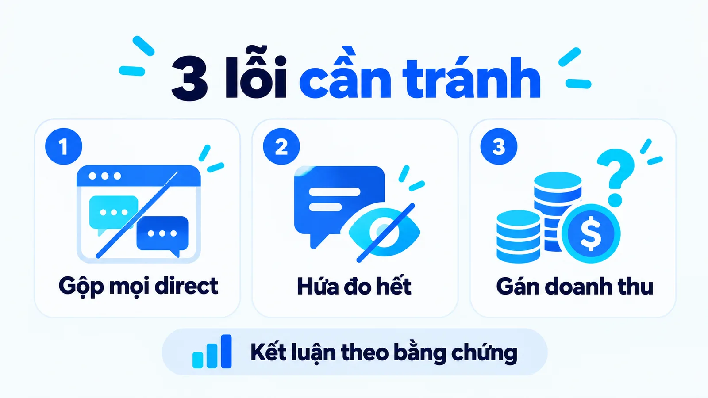
Ghép dữ liệu hệ thống với lời khách nói
Cách đọc hữu ích là lưu riêng ba lớp: hệ thống ghi nhận gì, khách khai báo gì và đội đang giả thuyết gì. Không ép chúng thành một nguồn duy nhất khi còn thiếu căn cứ.
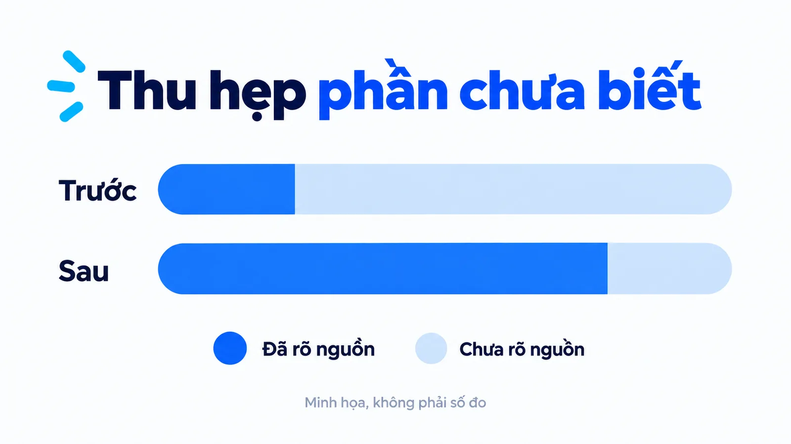
Trong ví dụ văn phòng, hệ thống ghi một yêu cầu tư vấn; khách nói đồng nghiệp gửi bài; đội giả thuyết nội dung giúp giảm băn khoăn. Hai lớp đầu là hai dạng bằng chứng khác nhau. Lớp cuối cần kiểm tra thêm, chẳng hạn hỏi khách phần nào hữu ích hoặc so sánh các nhóm phù hợp trong một thử nghiệm.
Dữ liệu khai báo cũng có giới hạn: người trả lời có thể quên nguồn đầu tiên, nhớ nguồn gần nhất hoặc chọn nhanh. Đọc tiếp Zero-party data và first-party data khác nhau thế nào để giữ đúng ý nghĩa từng trường. Không cần đọc tin nhắn riêng của khách để biết bài hướng dẫn có giải quyết được câu hỏi của họ không.
Nếu dùng AI để tóm tắt lời khách hoặc diễn giải báo cáo nguồn truy cập, hãy đối chiếu từng con số với dữ liệu gốc, vì mô hình có thể đưa vào chi tiết chưa có căn cứ. Bài Ảo giác AI là gì giải thích cách kiểm chứng.
Tín hiệu nào cho kết luận được gì?
Bảng dưới đây gom các tín hiệu hay gặp và tách rõ phần kết luận được với phần không kết luận được. Cột bên phải là chỗ phần lớn báo cáo đi quá xa so với dữ liệu.
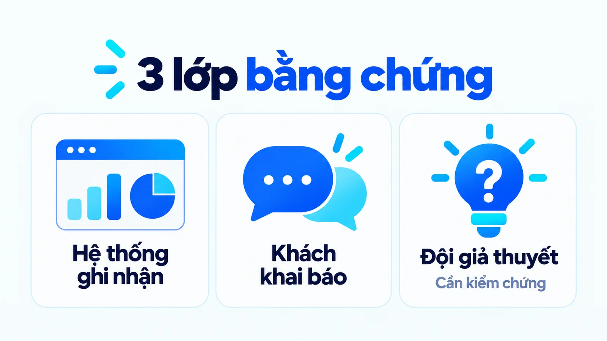
Một cách thực dụng để dùng bảng này trong họp: khi ai đó phát biểu một câu về nguồn, hãy hỏi lại câu đó thuộc cột giữa hay cột phải. Nếu thuộc cột phải, không cần tranh cãi đúng sai, chỉ cần hạ mức khẳng định xuống cột giữa rồi ghi lại việc cần làm để kiểm chứng. Cách này tránh được kiểu tranh luận cảm tính về việc ai lạc quan hơn ai.
Nguyên tắc chung rút ra từ bảng: mỗi tín hiệu chỉ cho phép một câu khẳng định hẹp hơn nhiều so với câu mà đội marketing muốn viết. Khi phải chọn giữa một câu mạnh và một câu đúng, hãy chọn câu đúng rồi ghi thêm việc cần làm để kiểm chứng.
Đánh giá giá trị mà không gán công trạng quá mức
Tôi xem dark social là lời nhắc về giới hạn quan sát. Nó giúp đội marketing đặt câu hỏi tốt hơn, chứ không phải lý do để tự cộng thêm doanh thu chưa có bằng chứng.
Cách trình bày trong báo cáo quyết định phần lớn câu chuyện. Một dòng ghi dark social chiếm 40% lưu lượng là một khẳng định không kiểm chứng được. Một dòng ghi 40% lưu lượng chưa xác định được nguồn, trong đó 12% vào các URL sâu nên có thể đến từ chia sẻ riêng tư, là một mô tả đúng với dữ liệu và vẫn đủ để đề xuất ngân sách.
Câu thứ hai dài hơn nhưng không ai bắt bẻ được, và nó tự nêu ra việc cần làm tiếp theo.
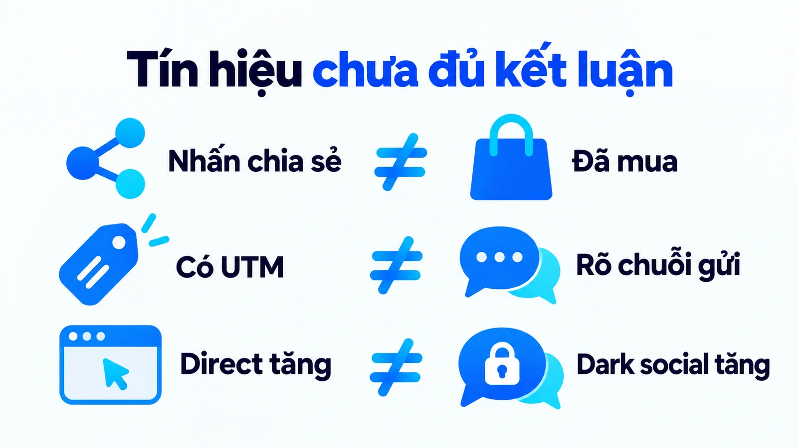
Với SME, hãy theo dõi chất lượng yêu cầu tư vấn và kết quả bán hàng bên cạnh tín hiệu chia sẻ. Khi thay đổi nội dung, giữ mục tiêu và cách đo nhất quán để so sánh có nghĩa. Đọc tiếp chủ đề Marketing trong Góc kiến thức nếu lượt chia sẻ tăng nhưng chưa rõ tác động kinh doanh.
Trước khi kết luận về nguồn trong một cuộc họp, chạy nhanh năm câu hỏi dưới đây và dừng ở câu đầu tiên không có câu trả lời chắc chắn.
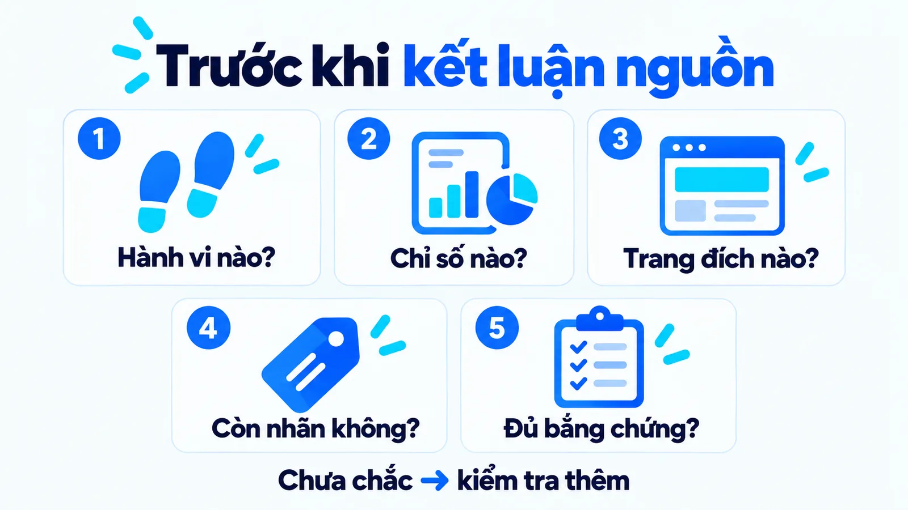
Câu hỏi thường gặp về dark social
Dark social có phải dark web không?
Không. Trong bài này, thuật ngữ nói về chia sẻ riêng tư khó quy nguồn. Nó không mô tả mạng ẩn hoặc một hình thức truy cập bất hợp pháp.
Có tính tỷ lệ dark social bằng toàn bộ direct traffic được không?
Không. Tài liệu Google nêu ba nhóm nguyên nhân của direct, trong đó gõ thẳng địa chỉ, link từ tài liệu ngoại tuyến và trình chặn quảng cáo không liên quan tới chia sẻ riêng tư. Chỉ nên trình bày phần ước tính cùng phương pháp và giả định.
Chia sẻ riêng tư có luôn chuyển đổi tốt hơn chia sẻ công khai không?
Không thể khẳng định cho mọi doanh nghiệp. Người gửi, nội dung, nhu cầu người nhận và cách đo đều ảnh hưởng kết quả. Cần dữ liệu phù hợp trước khi so sánh.
Có cấu hình nào lấy lại được nguồn mà trình duyệt đã cắt không?
Không. Chính sách Referrer-Policy do trình duyệt quyết định, và mặc định hiện nay không gửi đường dẫn khi chuyển sang tên miền khác. Cách duy nhất còn lại là gắn tham số vào chính URL hoặc hỏi trực tiếp người dùng.
Nên đặt câu hỏi biết đến qua đâu ở đâu trong biểu mẫu?
Đặt sau khi khách đã hoàn tất việc chính, ví dụ ngay sau màn hình xác nhận gửi form. Đặt ở giữa biểu mẫu sẽ làm giảm tỷ lệ hoàn thành, còn đặt ở email gửi sau thường có tỷ lệ trả lời thấp hơn nhiều.
Dark social có đo được bằng công cụ trả phí không?
Một số công cụ giúp thu hẹp phần chưa biết bằng cách quản lý link phát hành và ghi nhận sự kiện chia sẻ. Không công cụ nào khôi phục được thông tin mà trình duyệt đã quyết định không gửi, nên hãy đọc kỹ công cụ hứa đo cái gì trước khi mua.
Con số 57% và 69% năm 2012 còn đúng không?
Không nên dùng như một tỷ lệ hiện hành. Hai con số đó đo trên các trang tin ở thời điểm hệ sinh thái rất khác, và chúng có giá trị lịch sử hơn là giá trị tham chiếu. Doanh nghiệp cần tự đo trên dữ liệu của mình.
Kết luận
Dark social có giá trị khi giúp bạn đọc thận trọng hơn về nguồn. Hãy giữ phần quan sát được, phần khách cung cấp và phần chưa biết trong báo cáo; quyết định ngân sách sẽ có cơ sở hơn việc làm mọi hành trình trông hoàn chỉnh.
Bài viết đã phân biệt dark social và direct traffic, giải thích cơ chế Referer của trình duyệt, liệt kê ba nguyên nhân direct theo tài liệu Google và đưa quy trình bốn bước thu hẹp phần chưa biết. Nếu bạn muốn xem cách tôi xây hệ thống đo lường cho từng mô hình kinh doanh, phần năng lực chuyên môn trên trang hồ sơ có mô tả chi tiết hơn, và Góc kiến thức là nơi tôi lưu lại các bài phân tích cùng chủ đề.